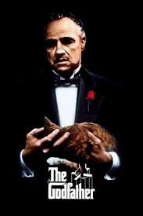

.jpg) |
Forest Gump2sa20m/Comedy, Drama, RomanticDirector:Robert Zemeckis Players:Tom Hanks, Gary Sinise, Robin Wright Forrest Gump is a young man with low I.Q. who falls in love with Jenny when he met her. Gump accidentally met historical figures, including Elvis Presley, Kennedy, and Nixon, and events unfold from the 1950s to the late 1970s. By sheer coincidence, Gump witnesses and even took part in Vietnam War and other significant events in recent American history. However. he is unware of the profound consequences of his actions.
|
|  | Godfather2sa10m/Drama, Tragedy Director:Paul Thomas AndersonPlayers:Daniel Day-Lewis, Paul Dano, Ciaran Hinds The Godfather tells the epic story of an Italian mafia family in 1940s amd 1950s America. At the wedding of Don Corleone's daughter, Connie, the youngest son of the family and a war veteran, Micheal, reconciles with his father. When an assassination attempt leaves the Don unable to manage the business, Micheal and his older brother Sonny take over the leadership of the family. With the help of their consigliere, Tom Hagen, the Corleone family declares war on the other families and begins to cahnge the old-fashioned ways. |
 |
Shutter Island3sa5m/Thriller, Mystery, DramaDirector:Martin Scorsese Players:Leonardo DiCaprio, Emily Mortimer, Mark Ruffalo Martin Scorsese’s Shutter Island, blending suspense and mystrey, is a modern classic that leads the viewer through a psychological maze right up to the final scene. Adapted from Denis Lehane's novel of the same name, this neo-noir psychological thriller tells the story of U.S. Marshal Teddy Daniel, who arrives at Shutter Island's Ashecliffe Hospital in 1954 to investigate the disappearance of a patient from the facility dor the criminally insane. From the moment he sets foot on the island, Teddy's sense of reality is shaken by nightmares, paranoia, and the haunting ghosts of his past. |